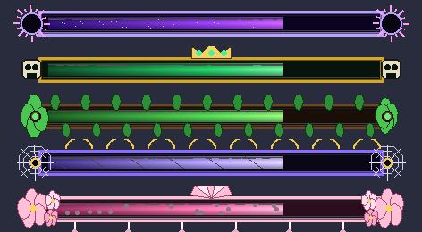

Systems & Crafting
Pearl stasis chambers, the Sanctum Warden and a crafting cheat-sheet.
Wayfarer's Journal & boss bars new
Every player receives the Wayfarer's Journal the first time they join. Use it to read your current clue, see progress (kills, offerings), present offerings and browse the lore pages you have unlocked. Progress is saved per player, so lost journals can be re-crafted (Book + Ink Sac + Pink Petals) without losing anything.
- Pages unlock with progress and by defeating great foes (each Hollow Lord, Hanae and the Eclipse Sovereign has a page).
- Chapter I leads to The Veiled Blossom; Chapter II sends you to the Eclipse Sovereign. The rest of the story is still to be written.

Each of our five bosses has its own themed health bar (corona, crown, vines, web, blossoms). Vanilla bosses keep the vanilla bar. If a bar ever fails to render, the vanilla bar still shows underneath.
Commands that help
/scriptevent ecr:diag- checks that every creature loaded and tells you if one did not./scriptevent ecr:story set 3- jump your journal to a step (0-6);resetstarts over;journalgives you a new journal./summon ecr:gravewalker,ecr:cave_weaver,ecr:veiled_blossom... - every creature has a spawn egg in the creative inventory too.
Boss music: the Veiled Blossom and the Eclipse Sovereign each have their own theme (CC0 tracks by Yoiyami and Juhani Junkala via OpenGameArt).
Stasis chambers
Bedrock pearls despawn when you leave the dimension, and add-ons cannot change engine chunk loading - so this pack re-creates Java stasis with blocks and script using vanilla pearls and fishing rods.
- Craft a Stasis Chamber and a Stasis Trigger Plate.
- Hold an Ender Pearl and use the chamber: the pearl is bound to you inside (sneak + empty hand takes it back).
- Use a fishing rod aimed at the plate (or the chamber) to link it; the lore shows where. Sneak + use clears the link.
- Anywhere, in any dimension: cast the rod = plate pressed (fires every chamber within 6 blocks of the plate and powers redstone); reel = released. You teleport to the chamber, take 5 pearl damage and the pearl is consumed.
- Chambers also fire from any redstone signal.
Sanctum Warden
A "chunk ban" block for Bedrock: place it and you own a protected zone.
How to get it (endgame)
N E N N = Netherite Ingot C = Eclipse Core (dropped by the Eclipse Sovereign) O C O E = Eclipsite Ingot T = Totem of Undying R T R O = Obsidian R = Pyrelite Ingot
How it works
- Right-click your Warden: range (whole chunk or 8-48 blocks), intruder response, block & container protection, trusted players (comma separated names), boundary preview, and a TEST toggle that treats you as an intruder for 30 s.
- Responses: Warn only · Repel · Expel to spawn · Seize items + Expel (items drop at the Warden - nothing is destroyed) · Seize + Expel + Kick.
- Intruders get a title and a 3-second grace period. Exempt: the owner, trusted names, holders of an attuned Sanctum Pass (paper + azurite ingot + ender pearl; use it on the Warden), operators, and players tagged
ecr_sanctum_bypass. - Only the owner can break the Warden. With block protection on, strangers cannot break, place or use things inside the zone.
Servers without operators (Aternos & co.)
- Nothing needs OP. Owners configure everything themselves.
- Each player can keep 3 Wardens.
- If the owner is offline for 21 real days, the zone lapses: protection stops and the next player to right-click the Warden can claim it. Wardens placed without an owner can be claimed the same way.
- Data is saved per zone, so big servers do not hit script storage limits.
Crafting reference
| Item | Recipe |
|---|---|
| Grave Sigil | 4 Hollow Bone (corners) + 4 Grave Dust (edges) + Gold Block (centre) |
| Verdant Heart | 4 Spore Cluster (corners) + 4 Moss Block (edges) + Emerald Block (centre) |
| Silk Idol | 4 Silk Gland (corners) + 4 Cobweb (edges) + Diamond (centre) |
| Eclipse Sigil | 4 Void Essence + 4 Pyrelite Ingot + Nether Star |
| Sanctum Warden | See above |
| Stasis Chamber | 4 Iron Ingot + 4 Glass + Ender Eye |
| Boar Tusk | → 3 Bone Meal |
| Silk Gland | → 4 String |
| Hollow Bone / Grave Dust / Spore Cluster | → Bone Meal (4 / 1 / 2) |
Wood from our trees crafts everything vanilla planks do (log → 4 planks works in the 2x2 inventory grid).
FAQ
Why is nothing new in my old world?
New content generates in new chunks only. Fly or ride to unexplored land, or make a new world.
A boss won't summon.
Read the on-screen hint: block, time of day and height all matter. Your relic is kept if conditions fail.
How do I know the scripts loaded?
The content log prints [Eclipsed Realms] ready; a failed module is named in the same line.
Do my death messages disappear?
While one of the pack's monsters is near a player the vanilla death message is replaced by a custom one; the setting is restored right afterwards.